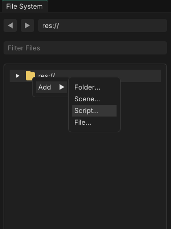
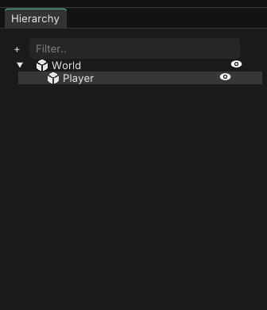
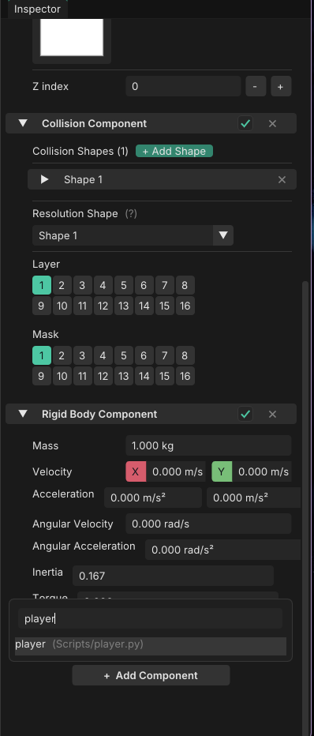
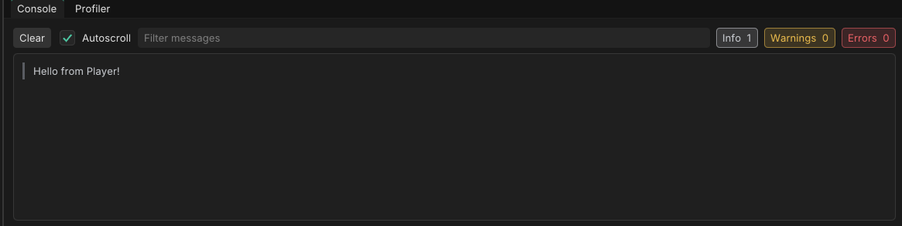
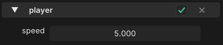

Scripting Guide¶
Scripts are how you make things happen in your game: moving a player, reacting to a key press, spawning enemies. In this guide you'll write your first script, attach it to an object, and build a simple movement system.
By the end you'll know how to:
- Create a script and attach it to an object
- Run code when the object starts and on every frame
- Print messages to the Console
- Read keyboard input
- Move an object around the scene
- Expose values to the inspector so you can tweak them without touching code
Python
Scripts are written in Python. If you've never used Python before, you can still follow along. Every example is short and explained.
1. Creating your first script¶

Create a new script file in your project (for example res://scripts/player.py) and open it in your editor.
Every script follows the same pattern:
from fusion import *
class Player(Script):
def OnStart(self):
Console.Print("Hello from Player!")
def Process(self, delta):
pass
Let's break that down.
from fusion import *
This line goes at the top of every script. It makes everything the engine provides (Script, Vector3, Input, Console, and more) available in your file.
class Player(Script)
Every script is a class that inherits from Script. The class name is up to you.
OnStart(self)
Runs once, when the object is added to the scene. Use it for setup.
Process(self, delta)
Runs every frame. delta is the time in seconds since the previous frame. Use it for anything that changes over time, like movement.
2. Attaching a script to an object¶
A script does nothing until it's attached to an object in your scene.

- Select the object you want to control in the scene.
- In the inspector, add your script to it.

Press Play. You should see Hello from Player! appear in the Console window.

Tip
If nothing shows up, check that the script is attached to an object that's actually in the scene, and that the class name inside the file matches what you expect.
3. Printing to the Console¶
The Console is the easiest way to see what your script is doing.
Console.Print("Everything is fine")
Console.PrintWarning("Something looks off")
Console.PrintError("Something broke")
Each message is tagged as Info, Warning, or Error in the editor's Console window. You can also use f-strings to print values:
Console.Print(f"Delta time: {delta}")
4. Accessing the object's components¶
Objects are built from components. Each one gives the object a capability:
| Component | What it does |
|---|---|
TransformComponent |
Position, rotation and size |
RenderComponent |
How the object looks (color, shape, texture) |
RigidBodyComponent |
Physics movement (velocity, forces, mass) |
CollisionComponent |
Collision shapes and collision events |
From inside a script, use get_component to fetch a component from the object the script is attached to:
class Player(Script):
def OnStart(self):
self.transform = self.get_component(TransformComponent)
self.render = self.get_component(RenderComponent)
Storing the result on self (like self.transform) lets you reuse it in Process without looking it up every frame.
You can also check whether a component exists, and add one if it doesn't:
if not self.has_component(RigidBodyComponent):
self.add_component(RigidBodyComponent)
And self.owner gives you the object the script is attached to:
Console.Print(f"I am attached to {self.owner.name}")
5. Changing things from a script¶
Once you have a component, you can read and change its properties.
class Player(Script):
def OnStart(self):
self.transform = self.get_component(TransformComponent)
self.render = self.get_component(RenderComponent)
# Move the object to a position
self.transform.world_position = Vector3(2, 0, 0)
# Make it twice as big
self.transform.size = Vector3(2, 2, 1)
# Tint it red (red, green, blue, alpha)
self.render.color = Vector4(1, 0, 0, 1)
Quick note on vectors¶
Positions, sizes and velocities are stored in vectors. Vector3(x, y, z) is the one you'll use most. Vectors support the math you'd expect:
a = Vector3(1, 0, 0)
b = Vector3(0, 1, 0)
c = a + b # Vector3(1, 1, 0)
d = a * 5.0 # Vector3(5, 0, 0)
6. Reading keyboard input¶
Use Input to check which keys the player is pressing:
def Process(self, delta):
if Input.is_key_pressed(Key.SPACE):
Console.Print("Space is being held down")
There are three kinds of checks:
| Method | True when |
|---|---|
Input.is_key_pressed(key) |
The key is held down (every frame) |
Input.is_key_just_pressed(key) |
The key was pressed this frame |
Input.is_key_released(key) |
The key was released this frame |
Keys live in the Key module: Key.A–Key.Z, Key.NUM_0–Key.NUM_9, Key.SPACE, Key.ENTER, Key.ESCAPE, Key.LEFT_SHIFT, and the arrows Key.UP, Key.DOWN, Key.LEFT, Key.RIGHT.
Mouse buttons work the same way with Input.is_mouse_button_pressed(Mouse.LEFT) and friends.
7. Building a basic movement system¶
Let's put it all together and make an object move with WASD.
from fusion import *
class Player(Script):
def OnStart(self):
self.transform = self.get_component(TransformComponent)
self.speed = 5.0
def Process(self, delta):
direction = Vector3(0, 0, 0)
if Input.is_key_pressed(Key.W):
direction = direction + Vector3(0, 1, 0)
if Input.is_key_pressed(Key.S):
direction = direction + Vector3(0, -1, 0)
if Input.is_key_pressed(Key.A):
direction = direction + Vector3(-1, 0, 0)
if Input.is_key_pressed(Key.D):
direction = direction + Vector3(1, 0, 0)
self.transform.world_position = (
self.transform.world_position + direction * self.speed * delta
)
Press Play and move around with WASD.
How it works¶
- Every frame we start with a
directionof zero. - Each held key adds a direction to it. Holding
WandDtogether gives you up-and-right. - We multiply the direction by
speedto say how fast to move, and bydeltaso that the speed is measured in units per second. Withoutdelta, your object would move faster on a faster computer. - We add the result to the current position.
Fixing diagonal speed¶
Moving diagonally is currently faster than moving in a straight line, because the direction (1, 1, 0) is longer than (1, 0, 0). Normalizing the direction fixes that:
if direction != Vector3(0, 0, 0):
direction = direction.normalized()
Put this just before the line that updates world_position. normalized() returns a new vector with a length of 1, pointing the same way.
Note
Vector3 and Vector4 use normalized(), while Vector2 calls the same thing normalize(). Both return a new vector rather than changing the original.
8. Tweaking values from the inspector¶
Hard-coding self.speed = 5.0 means you have to edit the script every time you want to try a different speed. Instead, you can export the value so it shows up in the inspector:
from fusion import *
class Player(Script):
speed = export_drag(5.0, 0.0, 20.0)
def OnStart(self):
self.transform = self.get_component(TransformComponent)
def Process(self, delta):
# ... same movement code as before, using self.speed
...

Exports are written as class-level assignments (outside of any function). The most common ones:
| Function | Use it for |
|---|---|
export(value) |
Any value, with the default widget for its type |
export_range(value, min, max) |
A number between a minimum and maximum |
export_drag(value, min, max) |
A click-and-drag number field |
export_color_edit(value) |
A color |
export_file(value, "*.png") |
A file from your project |
You can change the value in the inspector while the game is running to find what feels right, which makes tuning movement much faster.
9. Going further: physics-based movement¶
The movement above directly changes the object's position. If your object has a RigidBodyComponent, you can move it with physics instead, so it collides with and is pushed by other objects.
from fusion import *
class PhysicsPlayer(Script):
speed = export_drag(5.0, 0.0, 20.0)
jump_speed = export_drag(8.0, 0.0, 30.0)
def OnStart(self):
self.body = self.get_component(RigidBodyComponent)
self.collision = self.get_component(CollisionComponent)
Input.on_key_just_pressed(Key.SPACE, self.jump)
def Process(self, delta):
move = 0.0
if Input.is_key_pressed(Key.A):
move -= 1.0
if Input.is_key_pressed(Key.D):
move += 1.0
# Set horizontal speed, keep the current vertical speed (gravity, jumps)
current = self.body.velocity
self.body.velocity = Vector3(move * self.speed, current.y, 0)
def jump(self):
if self.collision.is_grounded():
current = self.body.velocity
self.body.velocity = Vector3(current.x, self.jump_speed, 0)
Two new ideas here:
- Callbacks.
Input.on_key_just_pressed(Key.SPACE, self.jump)tells the engine to callself.jumpwhenever Space is pressed, so you don't have to check for it every frame. - Grounded check.
is_grounded()on theCollisionComponenttells you whether the object is standing on something, so the player can't jump in mid-air.
Common mistakes¶
Forgetting delta. Movement that isn't multiplied by delta depends on frame rate.
Looking up components in Process. Fetch them once in OnStart and store them on self.
Forgetting self. Inside a class, use self.speed, not speed, when you want to read a value stored on the script.
Nothing happens. Make sure the script is attached to an object, and check the Console for errors.
Where to next?¶
You now know the basics: creating scripts, attaching them, reacting to input, and changing components. From here you can explore:
- The API Reference: every class and method, listed in full (API Reference)
- Physics and collisions: reacting when objects touch, raycasts, constraints
- Spawning objects and loading scenes
- Reinforcement learning: training agents to play your game (Getting Started)